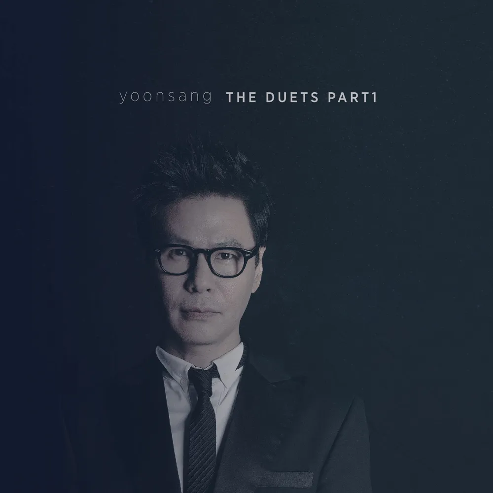

안녕하세요 라보엠입니다.
윤상의 노래들은 윤상만의 선율뿐 아니라 해학적이고 철학적인 가사도 매력이 넘칩니다. 2009년 6집 이후에 2014년 날 위로하려거든과 Duets 이라는 싱글 앨범을 발표했는데, 싱글 앨범 마저도 2016년 유성은과 함께한 그게 난 슬프다 이후로 정규앨범을 발표하고 있지 않네요. 많은 사람들이 윤상의 7집을 고대하고 있지만 나올지는 아무도 모릅니다. 윤상의 7집을 기다리며 윤상의 Duets1 Part1 앨범을 소개해드리겠습니다.
윤상 Waltz (duet with Davink) (2014)
이 곡의 뮤비는 폐장된 놀이 공원인 용마랜드에서 촬영했습니다. 저도 친구들과 셀프웨딩 비슷하게 출사로 갔던 곳이라 뮤비를 보며 반가웠죠.
눈오는 가운데 회전목마를 배경으로 무용수를 슬로우비디오로 촬영한 이 뮤비는 정말 아름답습니다. 색소폰은 한국 SNL 의 음악 감독이자 그룹 커먼 그라운드의 리더인 Jay Kim 이 연주했으며 간주와 후주의 클라이막스 라인도 멋지게 만들어냈습니다.
윤상 Waltz 티저
윤상 Waltz 가사
1.
잠든 너의 얼굴을 보면서
나도 모르게 입을 맞췄을 때
깜짝 놀란 얼굴로
쓴웃음 지으며
말없이 고개를 돌리는 너
너는 내게 지금이라 하고
나는 네게 아직이라 하는
이런 하루 또 하루가
전부는 아닐까
가끔은 주저앉고 싶지만
천천히 서로를 느끼며
가까이 리듬 속에
우린 함께 춤을 추고 있는 거야
너와 나 두손을 마주잡지는 않아도
두 입술을 포개지 않아도
하루 두번이라는 큰 원을 그리며
우린 함께 춤을 추고 있어
가끔은 넘어질 때도 있지만
그 모습이 서로 우습지만
세련되지 않아도 리듬을 찾아서
우린 다시 원을 그리는 거야
2.
삶이란게 너무 무겁다고
지친 얼굴로 날 보며 웃었지
말로 전하지 못했던 달콤한 위로는
늘 맘 속에 그늘로 있지만
괜찮아 서로를 느끼며
가까이 리듬 속에
우린 함께 춤을 추고 있는 거야
사라진 내일이 바로 지금이라는걸
우린 모두 서로 잘 알기에
시계바늘 따라서 큰 원을 그리며
지금도 우린 춤을 추고 있어
가끔은 넘어질 때도 있지만
그 모습이 서로 우습지만
세련되지 않아도 리듬을 찾아서
우린 함께 춤을 추는거야
두 손을 마주잡지는 않아도
두 입술을 포개지 않아도
하루 두번이라는 큰 원을 그리며
우린 함께 춤을 추고 있어
가끔은 넘어질 때도 있지만
그 모습이 서로 우습지만
세련되지 않아도 리듬을 찾아서
우린 다시 원을 그리는거야
윤상 & 성규(인피니트) Re : 나에게 (2014)
윤상 & 성규 Re : 나에게 가사
1.
이 노래를 부르고 있을
어느 날의 나에게
고마웠다고 얘기해주고 싶어
그 때 울었던 니가
나를 웃게 한다는
비밀 얘기를 네게 해주고 싶어
가장 어두웠던 날도
너의 하루는 너무도 소중했다고
지금 다 모른다 해도
너는 결코 조금도 늦지 않다고
다만 더 사랑해도 괜찮아
지금 니 모습과 너의 사람들을
한 번 더 날 믿어줘
전부 괜찮을거야
괜찮을거야
2.
무얼 모르는 건지
알아야만 하는지
하루도 못가 바뀌는 생각들
아름다운 고민인거라는
무책임한 얘기들
아마 조금 더 어려워질지 몰라
누구를 사랑하는지
또는 누가 나를 사랑하고 있는지
지금 다 알 수 있다면
조금 덜 아플건지 더 아플건지
다만 더 사랑해도 괜찮아
지금 니 모습과 너의 사람들을
한 번 더 나를 믿어줄래
전부 괜찮을거야 괜찮을거야
거짓말한적 있나요
위로하고 싶은 좋은 마음으로
지금만은 아니야
너에게 만큼은 단 한 번도
한 번 더 기다릴게
어느 날의 답장을 그 때 얘기를
언젠가 너와 나의 얘기가
어떤 화음으로 만날 수 있기를
어쩌면 우린 이미
그런걸지도 몰라
듣고 있을지 몰라
이 앨범에는 가수 팀(Tim)과 함께 부른 그 겨울로부터라는 노래도 있지만, 2016년에 유성은과 함께한 그게 난 슬프다가 플레이리스트로 어울린다고 생각해 이 노래를 이어서 소개합니다.
윤상 그게 난 슬프다 (feat. 유성은) (2016)
윤상 그게 난 슬프다 (feat. 유성은) 가사
영원할 것만 같았던 사랑은
어느새 차갑게 식어 버리고
덕분에 난 그때보다 더 현명해졌을까
아픔을 견뎌온 만큼
어쨌든 이제 난 더는 너를 미워하지 않아
한 걸음 또 한 걸음
부서져 버린 그 기억들을 밟으며 많이 울었다
그래서 이제 난 손톱만큼도 널 미워하지 않아
오래 기억하고 싶어
찬란히 빛나던 날들,
그 꿈은 어느새 까맣게 잊혀져 가고
덕분에 난 그때보다 더 떳떳해졌을까,
실망을 이겨낸 만큼
어쨌든 이제 난 가끔 네가 생각나지 않아
한 걸음 또 한 걸음
부서져 버린 그 기억들을 밟으며 많이 울었다
그래서, 이제 난 더 이상 너를 그리워하지 않아서
그게 난 슬프다
한 걸음 또 한 걸음
조각나 버린 우리의 꿈을 밟으며 참 많이 울었다
그래서, 이제 난 더 이상 너를 그리워하지 않아서
그게 난 슬프다
어쩌면 슬프고 어쩌면 신기한 일
너 없는 시간에 길들어 버린
이제는 널 위해 눈물 흘리지 않는
하루가 또 지난다
그게 난 슬프다
